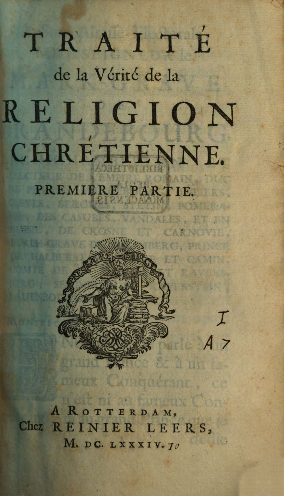
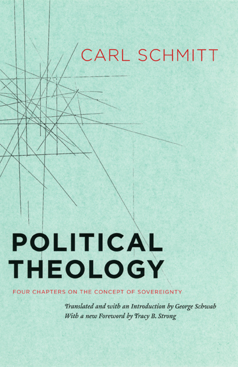

15:58 · 5 OPERE
La più ingegnosa tecnica di sospensione della democrazia.
Il filo del discorso
La lettura di un articolo presentato come pubblicato su Achgut nel giugno 2021 sviluppa una critica del rapporto fra linguaggio politico, persuasione ed esercizio del potere. Il percorso parte dalla trasformazione polemica del termine ideologia e passa alle immagini orwelliane della manipolazione delle parole e della memoria. Dr Divago contrappone poi il comando del sovrano alla necessità, propria di un governo rappresentativo, di motivare le decisioni e rispettare le garanzie costituzionali. Rousseau e Le Bon accompagnano la discussione della volontà generale e del convincimento delle masse; il richiamo ad Abbadie introduce il problema dei limiti dell’inganno. Il centro teorico è Teologia politica di Carl Schmitt, letta attraverso il nesso fra sovranità e stato di eccezione. I provvedimenti tedeschi del 1933 costituiscono il precedente storico evocato dal relatore. Nella parte finale, il discorso collega comunicazione politica, paternalismo e misure emergenziali contemporanee, sostenendo che la paura possa favorire una sospensione delle pratiche democratiche. Si tratta della tesi politica proposta nel video: l’analogia fra contesti diversi non dimostra da sola l’illegittimità di singoli provvedimenti. La conclusione richiama il diritto di resistenza della Legge fondamentale tedesca, da distinguere dal semplice dissenso verso un governo.
I libri nel discorso

1984
Identificazione probabile
Copertina: Newton Compton · edizione illustrativa
Gli slogan guerra/pace, libertà/schiavitù e ignoranza/forza identificano il romanzo, benché il titolo non venga pronunciato.
Passaggio 2:45 ↗ · Fonti e libro ↗
Il contratto sociale
Identificazione probabile
Copertina: Laterza · Economica · ristampa 2023 · edizione di riferimento
Il richiamo alla volontà generale di Rousseau suggerisce Il contratto sociale; il titolo non è pronunciato.
Passaggio 6:54 ↗ · Fonti e libro ↗
Psicologia delle folle
Identificazione probabile
Copertina: Apogeo · 2025 · nuova traduzione dell’edizione integrale originale
Immagine autentica dell’opera, controllata visivamente; l’edizione di riferimento non è attribuita al filmato.
Le Bon e il suo trattato sulle masse suggeriscono Psicologia delle folle; il titolo non è pronunciato.
Passaggio 7:50 ↗ · Fonti e libro ↗
Traité de la vérité de la religion chrétienne
Frontespizio della prima parte, 1684: Reinier Leers · prima parte, Rotterdam 1684
Frontespizio originale della prima parte nell’esemplare digitalizzato dalla Bayerische Staatsbibliothek, bsb10399767, scansione 1. Non è una copertina esterna. Nome dell’autore verificato nel catalogo bibliotecario. Copertina esterna ancora da reperire.
Abbadie è nominato a 561 secondi circa; titolo francese e anno 1684 sono espliciti a 603 secondi.
Passaggio 9:14 ↗ · Fonti e libro ↗
Teologia politica. Quattro capitoli sulla dottrina della sovranità
Copertina: University of Chicago Press · traduzione inglese, brossura 2006
Immagine autentica dell’opera, controllata visivamente; l’edizione di riferimento non è attribuita al filmato.
Schmitt, il 1922 e Teologia politica sono espliciti; la localizzazione della definizione nel quarto capitolo è inesatta.
Passaggio 10:29 ↗ · Fonti e libro ↗